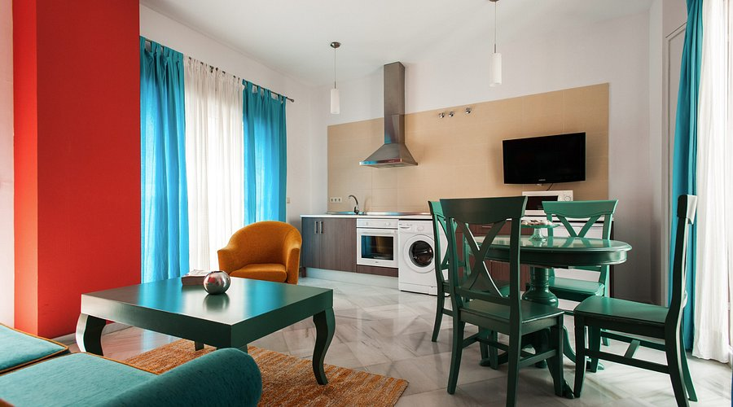
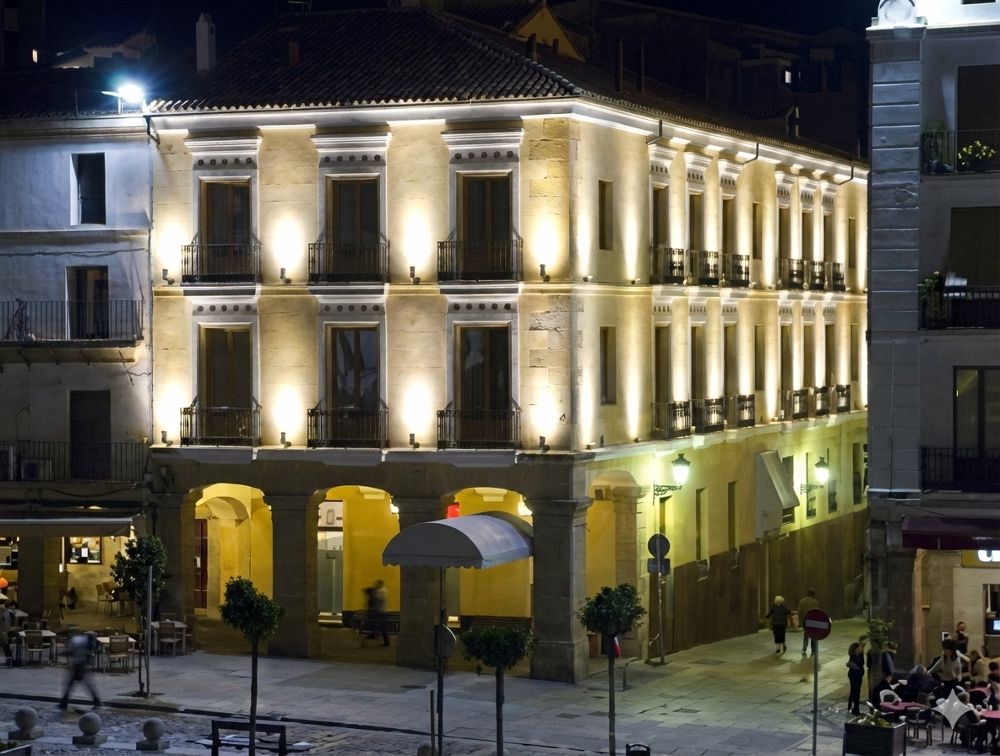
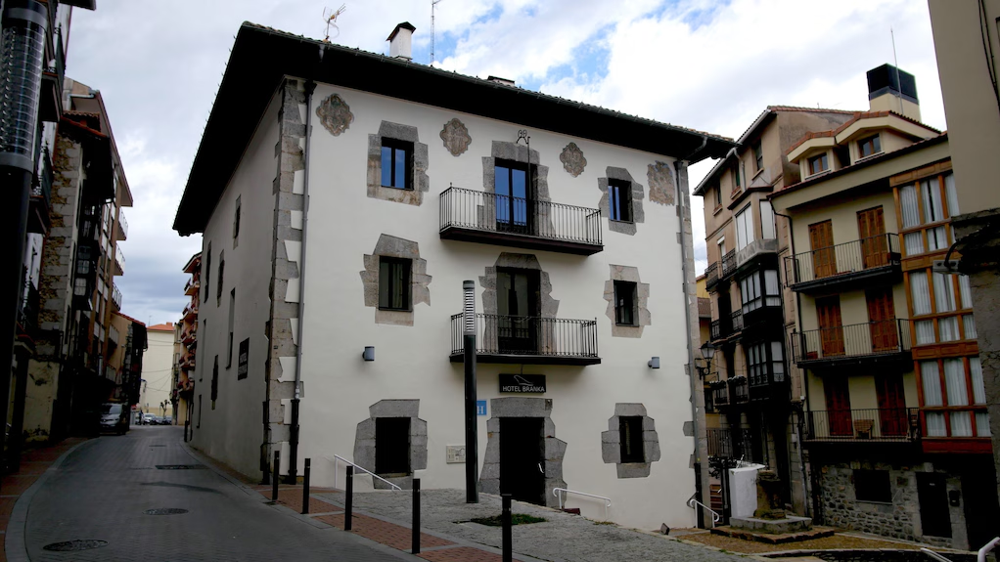
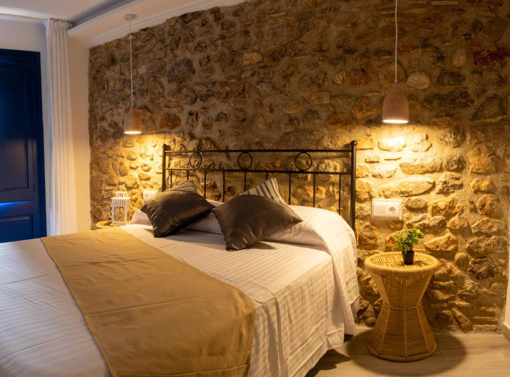
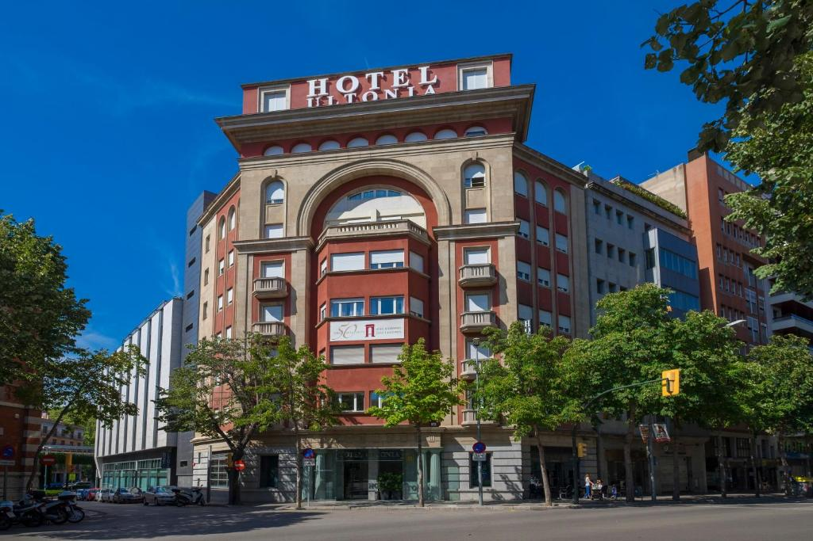

-
Sevilla
Hotel Singular Pilatos
Hotel situado en el centro histórico de Sevilla, cercano a los principales recursos monumentales. Su estilo y ubicación permiten una inmersión directa en el ambiente histórico de la ciudad, facilitando los desplazamientos a pie y el desarrollo de las actividades programadas.

-
Cáceres
Soho Boutique Casa de Don Fernando
Ubicado en pleno casco histórico, este hotel permite alojarse dentro del conjunto monumental de Cáceres, reforzando la ambientación medieval del destino.

-
Bilbao
Branka Mundaka
Alojamiento situado en un entorno natural, ideal para descansar tras las visitas a los paisajes costeros y reforzar el contacto con la naturaleza, uno de los ejes de esta etapa.

-
Castellón
Knysna Bed & Breakfast
Alojamiento con encanto, bien valorado y adecuado para una estancia tranquila tras las actividades culturales y naturales de la zona.

-
Gerona
Hotel Ultonia Girona
Hotel céntrico y bien comunicado, perfecto para acceder al casco histórico, las murallas y los principales escenarios de rodaje de la serie.
